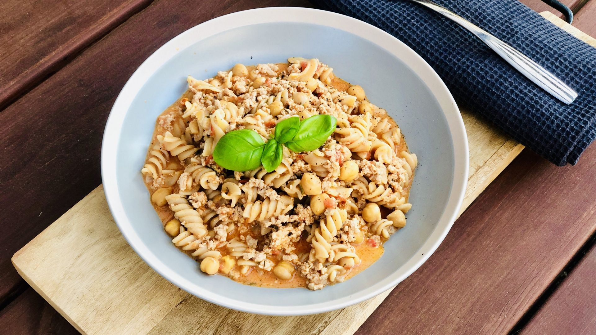

MAKARONID HAKKLIHAGA

|
MIDA LÄHEB VAJA? |
KUI PALJU LÄHEB VAJA? |
| Makaronid |
500 g |
| Hakkliha |
500 g |
| Paprika |
2 tk |
| Sibul |
2 tk |
| Küüslauk |
4 küünt |
| Merevaik |
3.5 spl |
| Sool, pipar |
Tunde järgi |
| Ürdid ja vürtsid |
Soovituslik |
- Haki pisikesteks tükkideks paprika, sibul ja pressi küüslauk
- Pane potti vesi ja aseta pliidile, kui vesi hakkab keema potis, lisa makaronid ja sool
- Aja pann kuumaks ja pane pannile hakkliha, paprika, sibul ja küüslauk, õli pole tarvis lisada
- Maitsesta hakkliha
- Kui hakkliha on valmis, lisa hakklihale merevaik ja kulbitäis keeduvett makaronide potist
- Kurna valminud makaronid
- Sega kokku makaronid ja hakkliha, vajadusel maitsesta
- Serveerimisel kasuta näiteks ürte või riivjuustu
- Head isu!
Tegemist on kohandatud retseptiga, algse retsepti leiad siit.